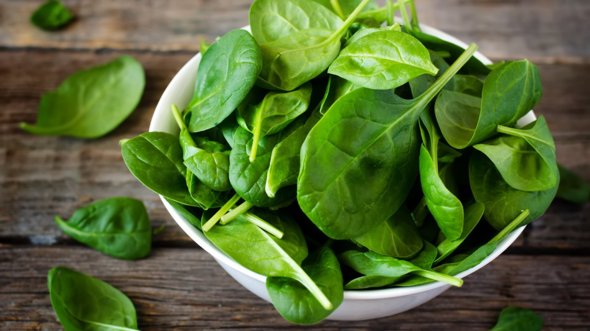

JESTES SZPINAKIEM
 Szpinak jest bardzo zdrowy i baardzo smaczny
Dobrze laczy sie z lososiem i tunczykiem
sa jednak ludzie ktorzy nie lubia szpinaku
maja troszke racji bo jest dosc oryginalny i czasem trudno obczaic o co mu chodzi
mimo to na pewno jestes lubiany i zdystansowany do siebie
pogodz sie ze nie wszyscy cie lubia i nie kloc sie z ludzmi w internecie
jesli tego nie robisz to cudownie i wszystko oki doki smoki